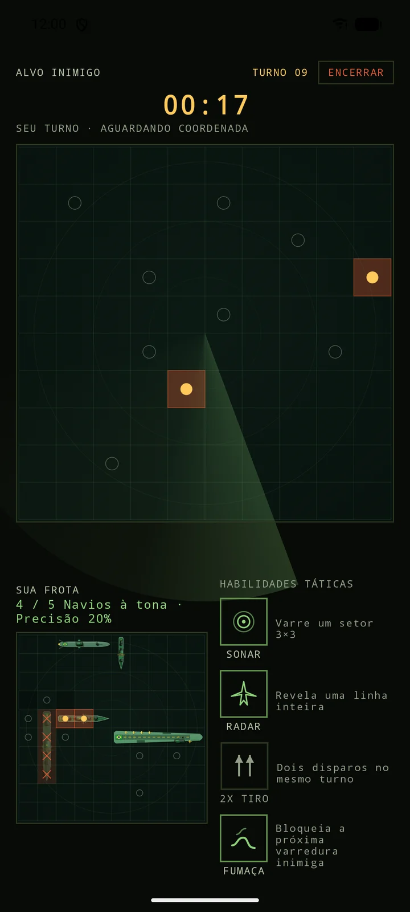
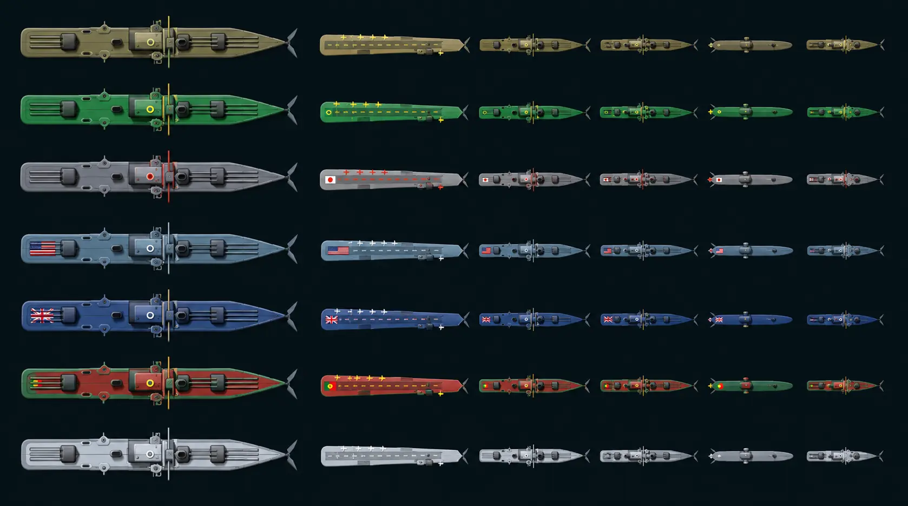
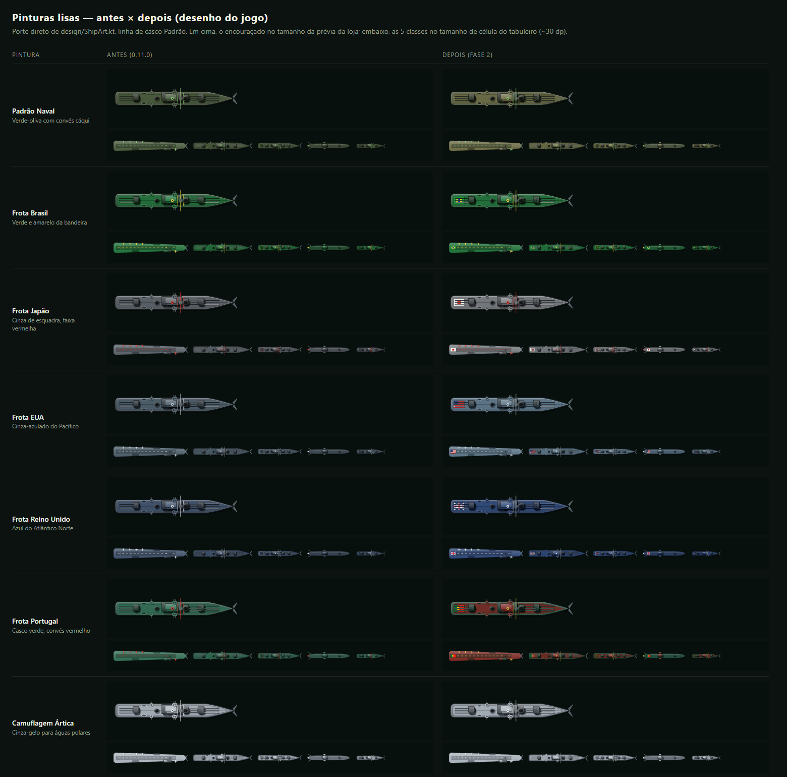
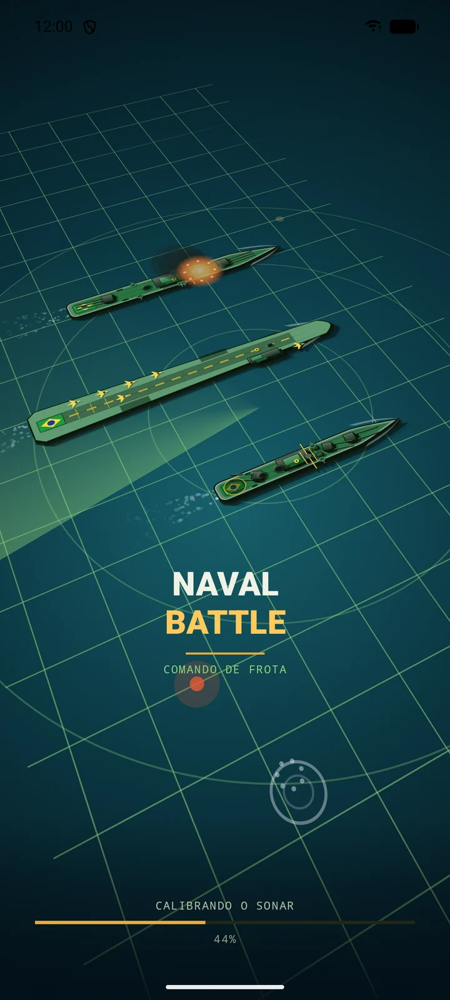
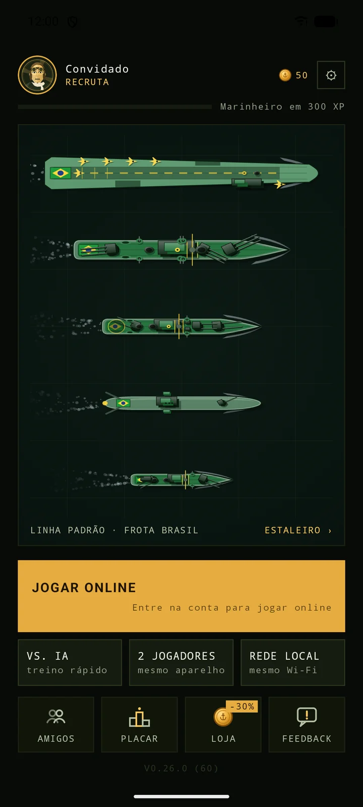
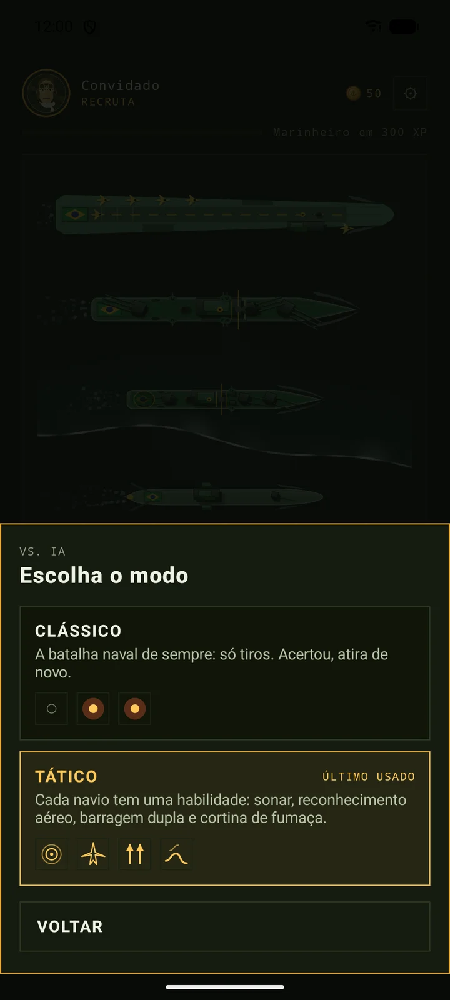
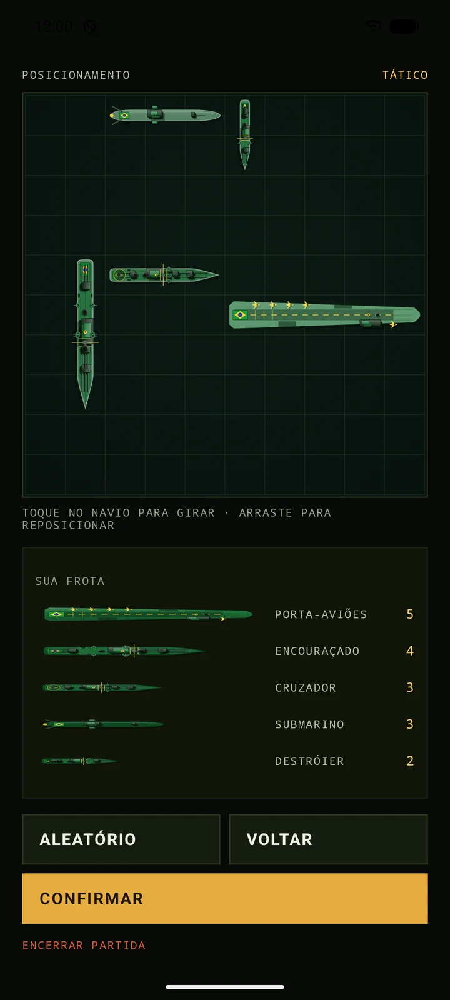
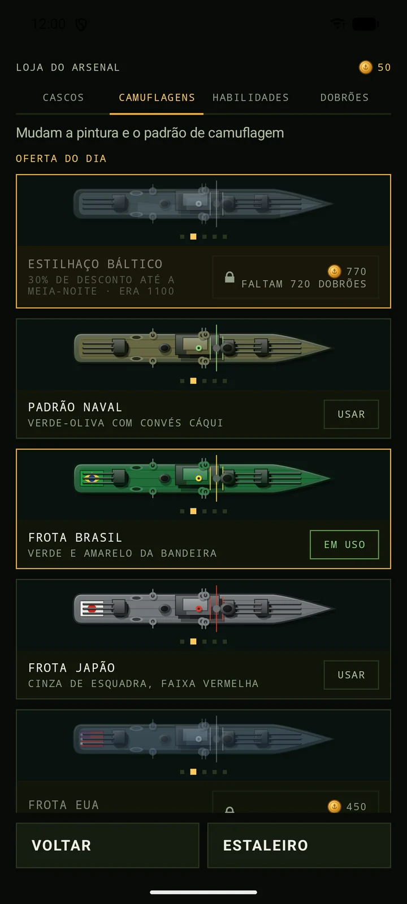
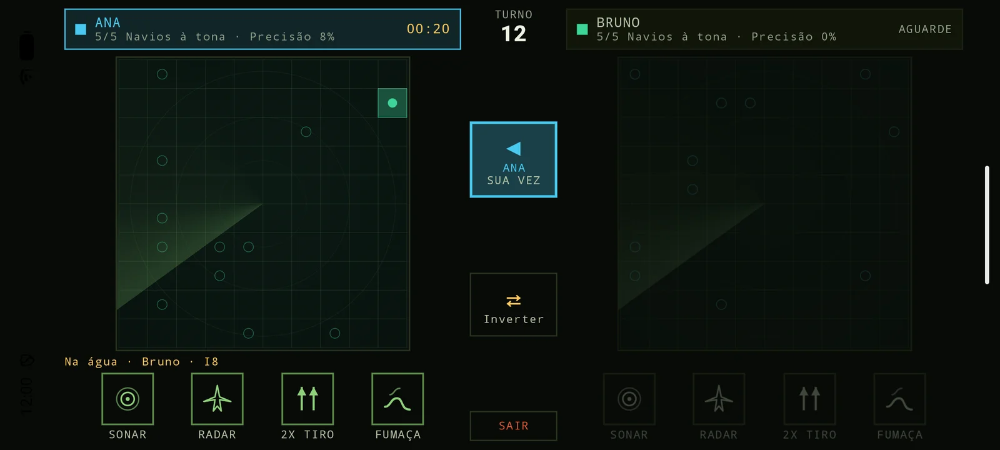

Batalha naval tática · Android · iOS (beta)
Um centro de comando naval no seu bolso. Radar varrendo a carta, míssil cruzando a tela, navio afundando em chamas — e a decisão de sempre: onde está a frota dele?

Acertou, atira de novo — a regra clássica da batalha naval, nos dois modos. No Tático, quatro classes têm habilidades com recarga própria. O Submarino recebe tiros normalmente; a escolha da habilidade muda a estratégia de cada turno.
Revela uma linha inteira da carta inimiga.
Dois disparos no mesmo turno.
Varre um setor 3×3 e diz se há metal ali.
Não tem habilidade própria e recebe tiros normalmente.
Bloqueia a próxima varredura do inimigo.
De Recruta a Almirante. Partidas contra IA e online rendem XP e dobrões; o Estaleiro combina itens conquistados.
Enfrente a IA, divida um aparelho, conecte dois celulares na mesma rede ou jogue online com uma conta.
Jogue Clássico ou Tático contra uma IA que procura contatos e persegue acertos. As partidas avançam sua carreira.
Cada comandante põe o nome e posiciona a frota em sigilo. A batalha vira na horizontal: um quadro para cada um, só o da vez aceso, o nome de quem joga no centro e um botão para inverter os lados. No fim, a vitória aparece no meio da tela.
Um cria a partida, o outro encontra pelo nome e entra. A conversa é direta entre os aparelhos — funciona até sem internet, só com a rede da casa. Ao fim da batalha dá para pedir revanche na mesma ligação, e durante o jogo dá para mandar emoji e grito de guerra pelo rádio.
Crie uma sala para um amigo ou encontre um adversário na partida rápida. No casual, jogue sem pontuação de ranking; na ranqueada, dispute pontos e posição na temporada.
Um comandante toca em criar partida.
O outro toca em procurar e escolhe o nome que aparecer.
Cada um posiciona a frota e a batalha começa nos dois ao mesmo tempo.
Ganhe XP e dobrões nas partidas contra IA e online, suba de Recruta a Almirante e acompanhe seu desempenho no Perfil. Partidas ranqueadas contam para o placar; as casuais não alteram a posição.
Enfrente jogadores pela internet e acompanhe pontos, posição e troféus da temporada. É preciso entrar na temporada antes de jogar ranqueada.
O Passe Gratuito libera a competição. O Passe de Temporada usa dobrões e oferece camuflagem da estação, dobrões e milhas; no fim, há prêmios conforme a colocação.
Partidas online gastam milhas, com recarga diária. A loja de dobrões no beta simula compras: não cobra dinheiro real. Compras reais ainda não estão disponíveis.
Check-in diário numa trilha de 7 dias seguidos, com bônus na semana completa, e um desafio do dia diferente a cada dia. Um lembrete opcional avisa quando o prêmio está esperando.
Busque comandantes pelo nome, veja a folha de serviço de cada um, com o retrato que escolheu, e convide para jogar com um toque.
Envie bugs ou sugestões pelo jogo. Feedback aprovado pode render dobrões ou cargas de habilidade, além da condecoração de Colaborador.
As novas pinturas dão identidade à frota inteira: Padrão Naval, Brasil, Japão, EUA, Reino Unido, Portugal e Ártica. Veja as embarcações ampliadas e compare os detalhes da nova arte de personalização.

Arte de desenvolvimento do jogo com as sete pinturas e as cinco classes de embarcação em cada linha. Abra a imagem em outra aba para conferir no tamanho original.

Cenas e capturas reais da versão atual, gravadas no emulador. A interface pode mudar nas próximas atualizações.






O Android está em teste fechado na Play Store, com APK de teste direto. O iPhone tem um .ipa de beta para instalação manual. Os arquivos diretos são atualizados na release do GitHub.
Pela Play Store · teste fechado
Cadastre o e-mail da Google Conta do celular, aguarde a liberação e instale pela Play Store. A página de beta tester mostra cada passo e avisa quando o seu acesso estiver liberado.
Enquanto a liberação não sai, dá para usar o APK direto, que instala sem convite.
Android 8.0 ou superior. O APK direto é uma compilação de depuração para testes; a versão distribuída pela Play Store segue o canal fechado.
.ipa num computador (Windows, Mac ou Linux — o iPhone
sozinho não instala esse arquivo)..ipa nele
e entre com um Apple ID (grátis — não precisa de conta paga de desenvolvedor).Versão de teste, sem assinatura oficial da Apple. O certificado grátis do Sideloadly dura só 7 dias — depois disso o app para de abrir; repita o passo 3 com o mesmo arquivo (ou um mais novo) para renovar.